聚善堂/高雄市
超峰寺からバスを乗り継ぎバナナの産地として有名な旗山の街に来た。
そこから数キロ北にある聚善堂というお寺を目指す。
バナナの林が続く山道を進んでいくと突然ぬっとチョコプラ松尾にそっくりな巨大な像が現れた。
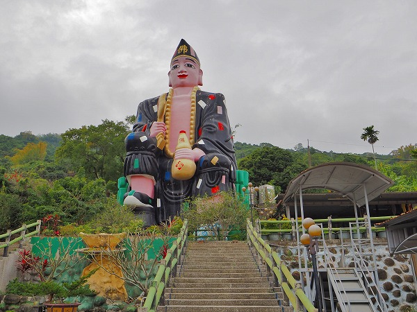
濟公活仏と呼ばれる僧侶の巨像なのだ。
濟公活仏は本名を道濟といい、今の浙江省に12世紀頃に実在した僧である。
一説には五百羅漢の生まれ変わりとも称された高僧だった。
しかし普段の風体はいつも酔っぱらってツギハギだらけのボロい衣をまとっていたという。

衣に短冊のように四角い模様があるが、それがツギハギを表現しているのだ。
ところがこの僧は人気者で、古くから庶民に信仰されているのだ。
ちなみに現在でもその人気は衰えず、数多くの映画やドラマに登場している。
有名なのは香港映画「マッド・モンク魔界ドラゴンファイター」で、あの小林サッカーでお馴染みの周星馳（チャウ・シンチ―）が濟公を演じている。
タイトルにマッド・モンクとあるようにまあ、マトモなお坊さんではないようだ。
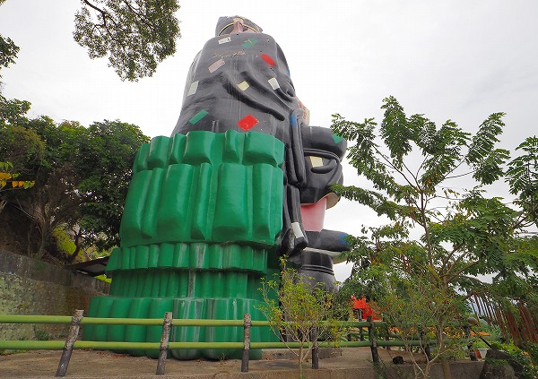
濟公は仏教の僧侶ではあるが、実際には道教でも信仰の対象にもなっている。
酒飲みで汚い風体だが、一説には時の権力者に利用されないように敢えてエキセントリックな言動をしていた、とも言われている。
そんな濟公像、階段の上に鎮座している。左手にマヨネーズみたいな酒徳利を持ち、右手には佛と書かれた扇を持っている。
首からは巨大な数珠をかけ、烏帽子のような帽子をかぶり、何とも言えない微妙な表情で遠くを見つめている。
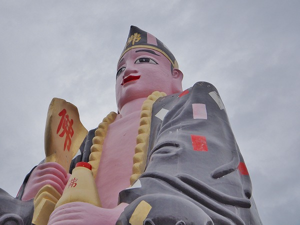
その高さは２０メートル程だろうか。普段ダメダメなふりをしていたというエピソードに習ってダメ風なルックスのような気がする。
そういえば20年以上前にもこの旗山という街に来たことがあった。
その時はここより大きな濟公活仏像を見たなあ。
この地に所縁があるのだろうか？
濟公像に見とれて気付くのが遅くなってしまったが少し離れたところにこれまた大きな観音像が立っていた。
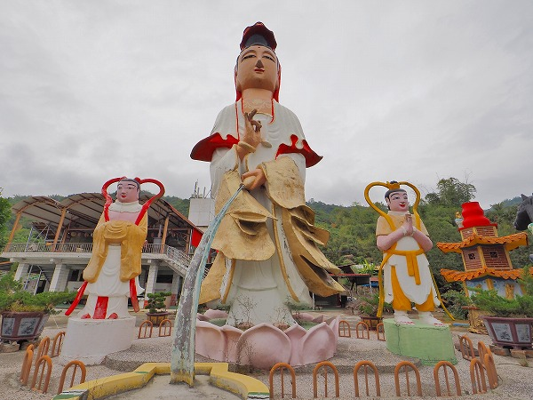
観音像は高さ１０メートル以上はあろうか。
花筒のような壺を左手に持ち、そこから水を垂らしているスタイル。アジアの仏教寺院でよく見かける観音像のスタイルだ.
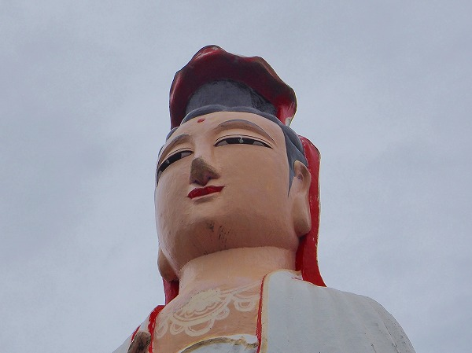
両脇にはやや小振りの脇侍のような像が並んでいる。これも３～４メートルはあろう。
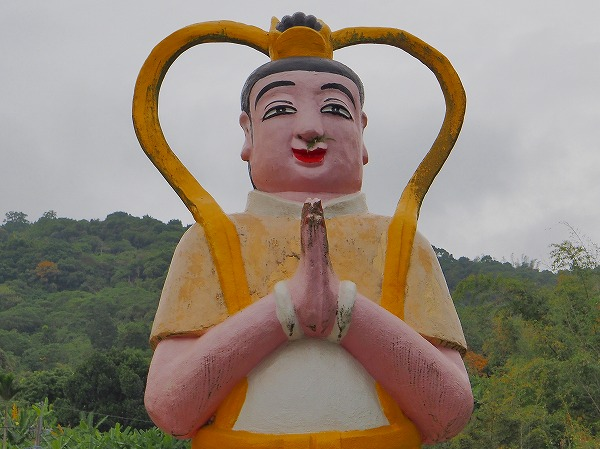
この2体の像も結構ユルい表情だ。
こちらはさしずめバナナマンの日村といったところか。
さらにその傍らにはこれも巨大な関羽の像が。
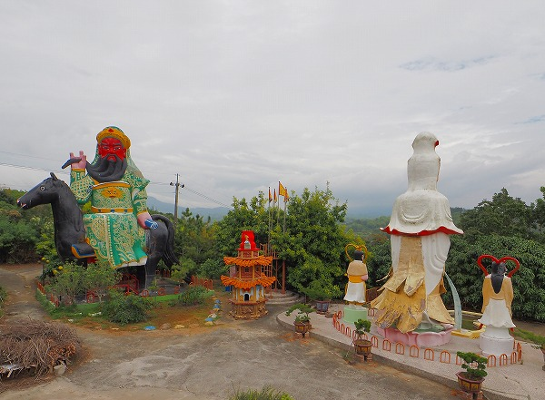
関羽は御存じ三国志に登場する武将だが、軍を運営する銭勧請も上手かったという言い伝えにより、古くから商売の神様として大変人気がある。
横浜中華街の関帝廟もこの関羽を祀っているのである。
一般的に関羽は赤い顔で長い髭をたくわえ、手には青龍偃月刀という薙刀のような武器を持っているポーズが多い。
ところがここの関羽像は左手に巻物を持ち右手は長い髭を撫でている。
そして巨大な馬に横坐りで乗っている。
関羽と言えば赤兎馬という赤い毛の名馬が思い浮かぶ。
しかしここでは真っ黒い馬。うむ～。
勇猛果敢な武神、というイメージとは程遠いぞ。
しかも赤兎馬とは違って名馬っぽくないし…。
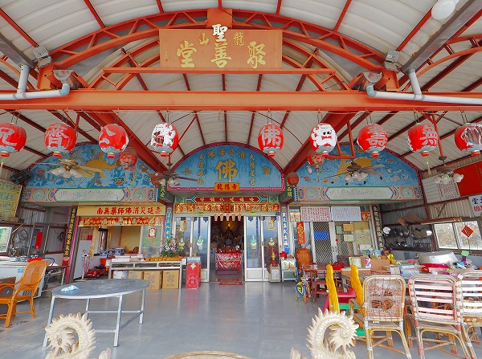
トタン屋根の本堂に入ってみる。中にはおじさんが独りで暇そうに座っていた。
台湾のお寺には僧侶ではない管理人的な普通のおじさんが独りでいることが多い。
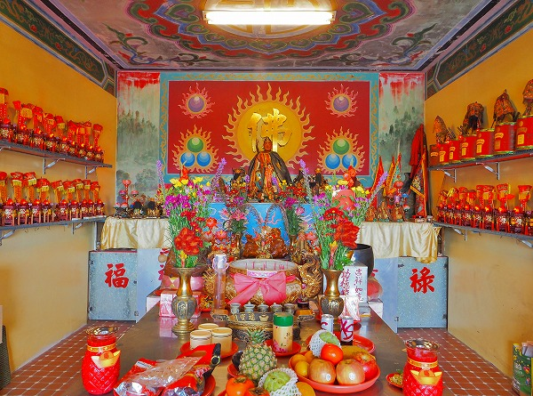
堂中には仏像と道教の神像が混ざって祀られていた。
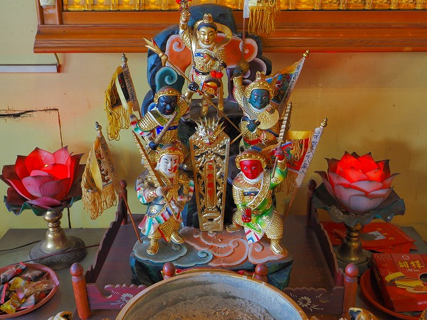
台湾では仏教と道教が混在しており、その境目を見分けるのすら難しい。
この寺もご多分に漏れず仏教と道教の神像が当たり前のように並列していた。
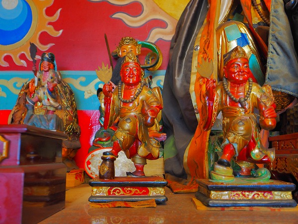
中国語しか話せないおじさんは私に茶をふるまってくれた。
これも台湾の田舎のお寺にいくとよくある事である。
おじさんは全く言葉が通じないのに身振り手振りで「このお茶を飲んだら足腰や目に効くぞ！」と言っているようだった。
さらに「一杯飲むと超元気！二拝飲むとスーパー元気！三杯飲んだら山の向こうまで飛んでいけるぞ！」と言っていた。
言葉は全く判らないけど身体全体を使ったハイテンションなゼスチャーでお茶の効能を説明してくれた。
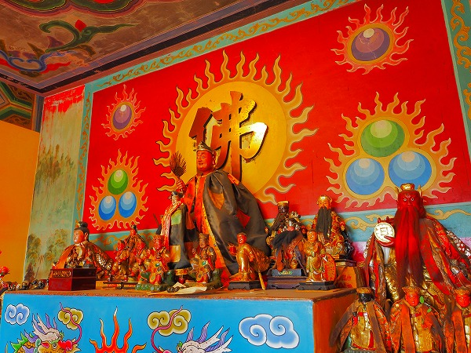
所詮言葉など通じなくても熱意があれば伝わるんだなー。
と妙に納得してしまった。コレは世界を旅するうえで非常に重要な事に思える。
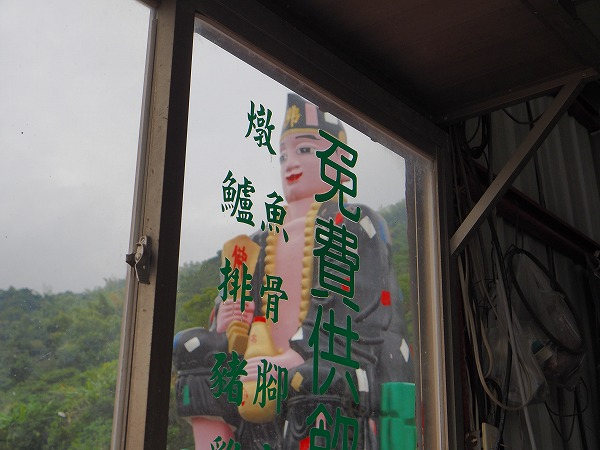
ちなみにこのお茶、超絶不味くて三杯目はおろか二杯目も無理でした…。
次の珍寺にGO！
台湾大佛列伝6に戻る